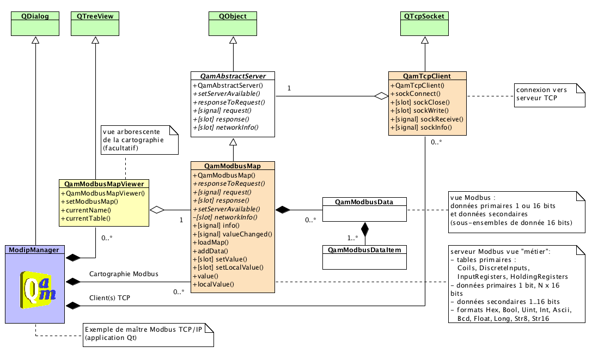
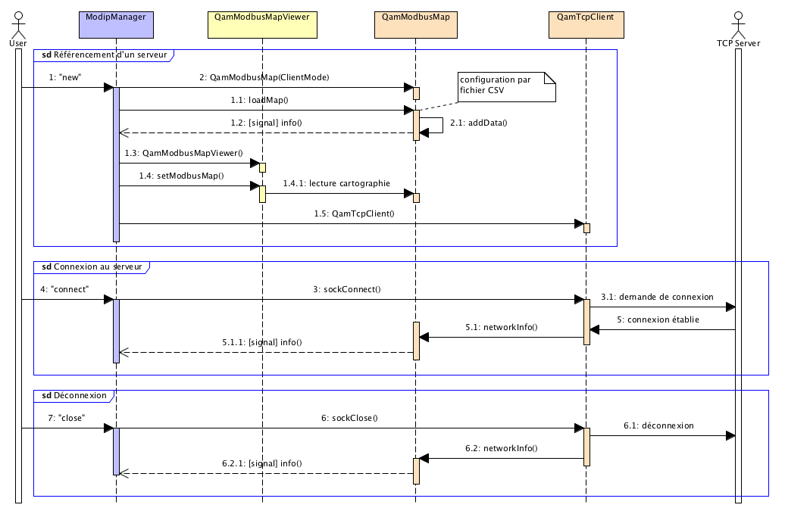
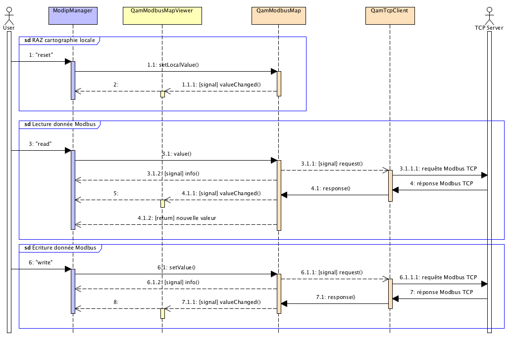

Client Modbus TCP/IP, manuel du développeur
Modèle logiciel
Le référencement d'un serveur Modbus se résume pour la classe d'application à une relation de composition avec 3 objets :
- un objet de classe QamModbusMap pour la modélisation de la cartographie Modbus du serveur ;
- un objet de classe QamTcpClient pour la prise en charge du réseau ;
- et un objet (facultatif) de classe QamModbusMapViewer pour la visualisation arborescente de la cartographie sur l'IHM.
L'application ModipManager applique les principes précédents, elle gère des listes de chacun des 3 composants afin d'autoriser le référencement de plusieurs serveurs.
L'objet QamModbusMap est construit avec le mode ClientMode. Sa cartographie est initialisée par chargement du contenu d'un fichier CSV grâce à la méthode QamModbusMap::loadMap(). Le fichier de configuration utilisé doit correspondre à celui employé par le serveur que le client souhaite contacter ; le format de ces fichiers est décrit sur la page de l'application ModipButler.
L'objet QamModbusMap est agrégé à l'objet QamTcpClient lors de la construction de celui-ci.
Le même objet QamModbusMap est associé au widget de visualisation au moyen de la méthode QamModbusMapViewer::setModbusMap().

Les principales interactions entre l'application et les classes Qam Modbus over TCP/IP sont regroupées dans les diagrammes de séquence ci-dessous. La classe d'application intercepte les signaux QamModbusMap::info() et QamModbusMap::valueChanged() ; elle reçoit ainsi toutes les informations relatives au réseau, au traitement des trames Modbus et aux changements de valeurs dans la cartographie.

En mode client, l'application accède aux quatre tables primaires en lecture et à seulement deux tables en écriture ; elle dispose pour cela des méthodes QamModbusMap::value() et QamModbusMap::setValue().
L'objet associé de classe QamModbusMapViewer permet aussi une édition directe (non représentée ci-dessous) des valeurs au niveau de l'IHM d'application ; cette action entraine le même comportement qu'une modification par programme...

Note de version :
Application minimale
Les portions de code ci-dessous montre les fichiers d'un projet Qt de type console (sans interface graphique) mettant en oeuvre un client Modbus TCP/IP. Pour la démonstration, le programme accepte des commandes élémentaires à fournir sur l'entrée standard :
- table
- list : pour obtenir la liste des noms des données primaires disponibles ;
- items
name : pour afficher la liste des données secondaires d'une donnée primaire ;
- read
name : pour lire la valeur d'une donnée spécifiée par son nom ;
- write
name value : pour modifier la valeur d'une donnée (si la table sélectionnée est accessible en écriture) ;
- quit : pour se déconnecter du serveur et quitter l'application.
Le fichier de configuration est transmis sur la ligne de commandes ; le format de ce fichier est décrit sur la page de l'application ModipButler. Le fichier choisi doit correspondre à celui du serveur sur lequel la connexion est envisagée.
La classe d'usage dérive de QObject afin d'autoriser la mise en place du mécanisme signal-slot. Son constructeur prend en charge l'initialisation de la cartographie Modbus, la création du client TCP, la connexion au serveur et la mise en place d'un système de notification des saisies clavier.
Les requêtes de lecture et d'écriture de données sur le serveur sont réalisées au moyen des méthodes QamModbusMap::remoteValue() et QamModbusMap::setRemoteValue(). Ces opérations interrogent le serveur et mettent à jour la cartographie locale ; la valeur effective de la donnée est donc prélevée dans cette cartographie pour affichage.
Le terminal d'exécution affiche les messages remontés par le signal QamModbusMap::info().
ModipMasterLight.pro
QT += core network
QT -= gui
TARGET = ModipMasterLight
CONFIG += console
macx:CONFIG -= app_bundle
TEMPLATE = app
MOC_DIR = .moc
OBJECTS_DIR = .obj
QAMSOCKETS = ../../libs/QamSockets
INCLUDEPATH += . $${QAMSOCKETS} $${QAMMODBUSMAP}
SOURCES += main.cpp \
modipmaster.cpp \
$${QAMSOCKETS}/qamtcpclient.cpp \
$${QAMSOCKETS}/qamabstractserver.cpp \
$${QAMMODBUSMAP}/qammodbusmap.cpp \
$${QAMMODBUSMAP}/qammodbusdata.cpp
HEADERS += modipmaster.h \
$${QAMSOCKETS}/qamtcpclient.h \
$${QAMSOCKETS}/qamabstractserver.h \
$${QAMMODBUSMAP}/qammodbusmap.h \
$${QAMMODBUSMAP}/qammodbusdata.h
modipmaster.h
#ifndef MODIPMASTER_H
#define MODIPMASTER_H
#include <QObject>
#include <QSocketNotifier>
class ModipMaster : public QObject
{
Q_OBJECT
public:
explicit ModipMaster(const QString& configFile, QObject* parent = 0 ) ;
signals:
void quit() ;
public slots:
void readConsole() ;
void info(const QString& src, const QString& msg ) ;
private:
QSocketNotifier* m_notifier ;
} ;
#endif // MODIPMASTER_H
modipmaster.cpp
#include "modipmaster.h"
#include <QSocketNotifier>
#include <iostream>
using namespace std ;
ModipMaster::ModipMaster(const QString& configFile, QObject* parent )
: QObject(parent)
{
m_map->setVerbose( false ) ;
connect( m_map, SIGNAL(info(QString,QString)), this, SLOT(info(QString,QString)) ) ;
m_map->loadMap( configFile ) ;
m_client->sockConnect( m_map->host(), m_map->port() ) ;
m_notifier = new QSocketNotifier(fileno(stdin), QSocketNotifier::Read, this ) ;
connect(m_notifier, SIGNAL(activated(int)), this, SLOT(readConsole()) ) ;
}
void ModipMaster::readConsole()
{
QTextStream in(stdin) ;
QString line = in.readLine() ;
QStringList parse = line.split( QRegExp("\\s+") ) ;
if ( parse.at(0) == "table" ) {
if ( parse.size() > 1 ) {
int t = parse.at(1).toInt() ;
}
}
if ( parse.at(0) == "list" ) {
QStringList nl = m_map->nameList(m_table ) ;
for ( int i = 0 ; i < nl.size() ; ++i ) cout << qPrintable( nl.at(i) ) << endl ;
}
if (( parse.at(0) == "items" )&&( parse.size() > 1 )) {
QStringList nl = m_map->itemList(m_table, parse.at(1) ) ;
for ( int i = 0 ; i < nl.size() ; ++i ) cout << qPrintable( nl.at(i) ) << endl ;
}
if (( parse.at(0) == "read" )&&( parse.size() > 1 )) {
QString res = m_map->remoteValue(m_table, parse.at(1) ) ;
cout << qPrintable( res ) << endl ;
}
if (( parse.at(0) == "write" )&&( parse.size() > 2 )) {
m_map->setRemoteValue(m_table, parse.at(1), parse.at(2) ) ;
QString res = m_map->localValue(m_table, parse.at(1) ) ;
cout << qPrintable( res ) << endl ;
}
if ( parse.at(0) == "quit" ) {
emit quit() ;
}
}
void ModipMaster::info(const QString& src, const QString& msg )
{
cout << qPrintable( src ) << ": " << qPrintable( msg ) << endl ;
}
main.cpp
#include <QCoreApplication>
#include <modipmaster.h>
#include <iostream>
using namespace std ;
int main(int argc, char *argv[] )
{
QCoreApplication app(argc, argv ) ;
QStringList args = QCoreApplication::arguments() ;
if ( args.size() < 2 ) {
cerr << "usage: " << qPrintable( args.at(0) ) << " <configFile>" << endl ;
return -1 ;
}
ModipMaster* master = new ModipMaster( args.at(1), &app ) ;
QObject::connect(master, SIGNAL(quit()), &app, SLOT(quit()) ) ;
return app.exec() ;
}